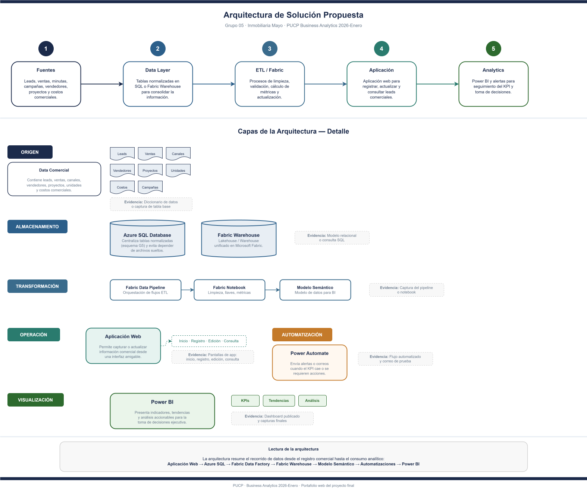

Arquitectura de solución propuesta
La arquitectura resume el flujo completo de la solución: captura de datos comerciales, almacenamiento, transformación, automatización, modelo analítico y visualización ejecutiva para la toma de decisiones.

Arquitectura general del proyecto: integración entre aplicación comercial, base de datos, Fabric, Warehouse, automatizaciones y Power BI.
Lectura ejecutiva de la arquitectura
Entrada y operación
La capa de aplicación permite registrar clientes, unidades de interés y asignación comercial para alimentar el proceso de venta.
Procesamiento y almacén
Azure SQL, Dataflows y Fabric Warehouse consolidan la información y preparan las tablas para análisis.
Consumo analítico
El modelo semántico y Power BI habilitan dashboards de conversión, funnel, portafolio y rendimiento comercial.